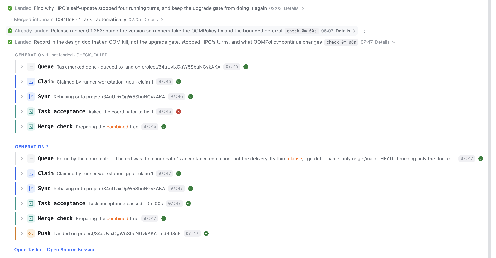
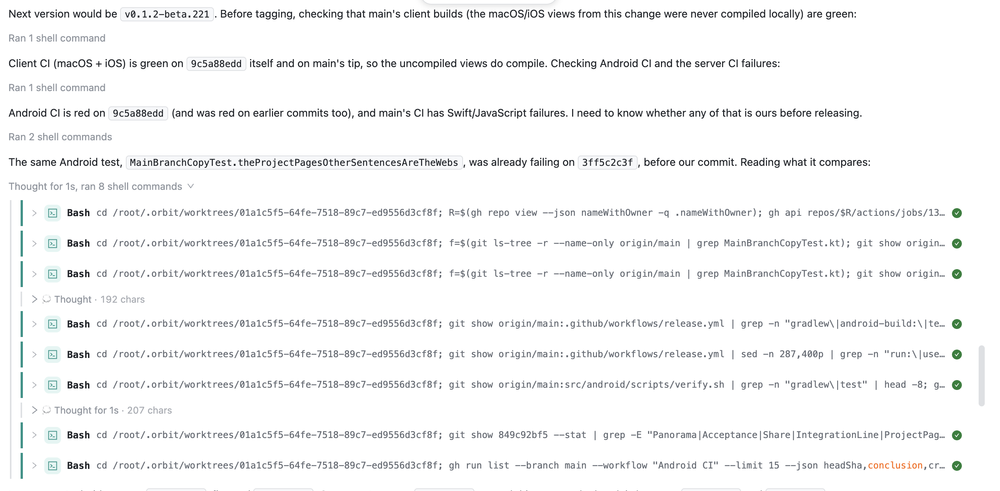
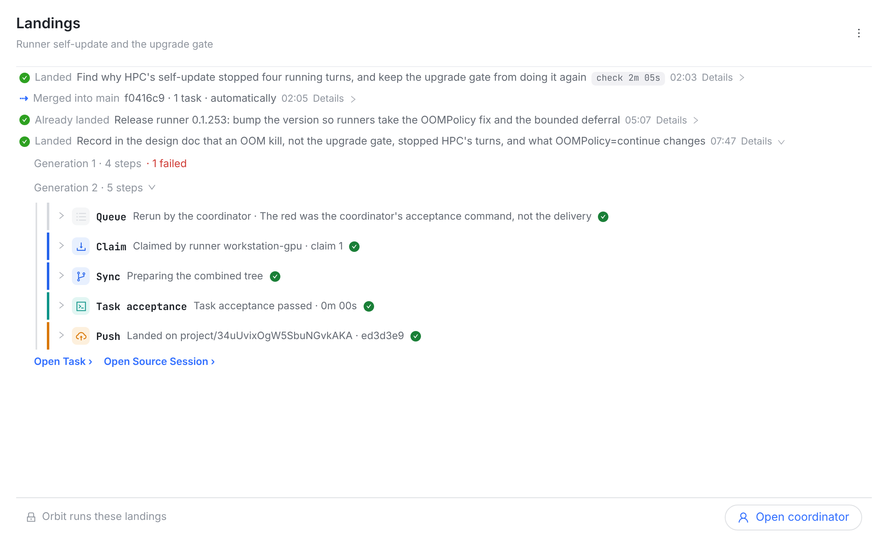
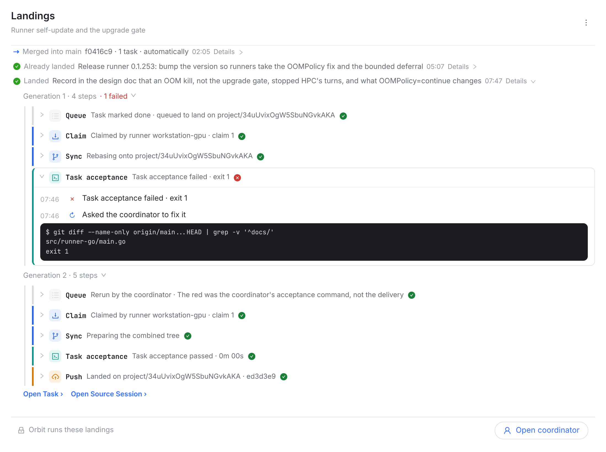

owner 11-11：「你再核对下图 1 和图 2 普通 session 聊天的样式」→「按推荐的来，先出设计图」。
会话里一串工具调用默认折成一行灰字（Ran 1 shell command / Thought for 1s, ran 8 shell commands），点开才是工具行；工具行上没有时刻；失败只在那行灰字末尾写红色 · 1 failed。今天的 Landings 点开后每一代都把工具行全摊开，还有大写的 GENERATION 1 标题和每行的时刻胶囊，跟会话不是一个样子。另有三处内容不对（下面红字）。改后两帧是真实 web 截图：会话页本身，用的就是会话的 chat-steps / chat-tool-card。

check 0m 00s：不到一秒的检查写成 0m 00s，没信息量。


要动的：src/web/src/lib/landingSteps.ts（归组、结论、HANDED_TO）、ProjectLandingsWindow.tsx（每代一行 chat-steps、去掉行上时刻和大写标题、胶囊 <1 s 不写），iOS LandingSteps.swift / Android LandingSteps.kt 同步规则；各自的测试。